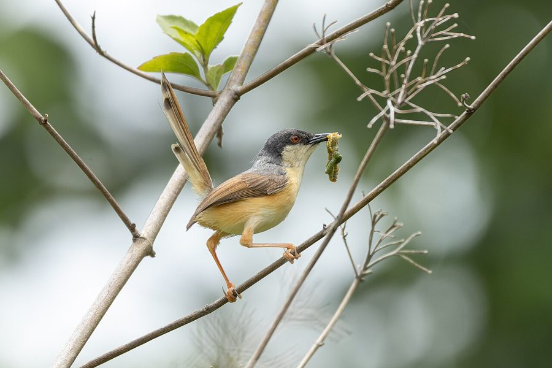

राखी फुदकीAshy Prinia
Prinia socialis · Cisticolidae · BRD-0001

- Scientific name
- Prinia socialis Sykes, 1832
- Family
- Cisticolidae
- Hindi
- राखी फुदकी / राखी प्रिनिया
- Status here
- native
- IUCN
- LC
When to look कब देखें
Present all year.
राखी फुदकी / Ashy Prinia
Prinia socialis Sykes, 1832 — Cisticolidae
राखी फुदकी — झाड़ियों की आवाज़ जो दिखती नहीं। गौरैया से छोटी, ऊपर से धूसर-भूरी, नीचे से हल्की पीली, और वह लम्बी उठी हुई पूँछ — यही पहचान है। ट्सीट-ट्सीट-ट्सीट की तेज़ आवाज़ हर खेत की मेड़ और बगीचे की झाड़ी से आती है, पर चिड़िया छुपी रहती है — पास जाने पर उड़ती नहीं, और अंदर घुस जाती है। कीड़े-मकोड़े खाती है — किसान की मित्र। घोंसला घास और मकड़ी के धागे से बुना हुआ, पत्तियों में छुपा हुआ। पूर्वी UP का सबसे आम, सबसे कम पहचाना जाने वाला पक्षी।
Quick Identification त्वरित पहचान
| Feature | Description |
|---|---|
| Size | 11–13 cm total length — smaller than a House Sparrow; weight 7–10 g |
| Upperparts | Ashy grey-brown in winter; more rufous-brown in breeding season |
| Underparts | Pale buffy-white; washed pale rufous on flanks |
| Tail | Long, frequently cocked upward — most diagnostic feature; proportionally shorter in breeding season |
| Bill | Short, fine, slightly downcurved |
| Call | Loud repeated tseet-tseet-tseet or buzzy churring — heard far more often than bird is seen |
| Behaviour | Skulks in dense bushes; drops deeper into vegetation when approached; never stays still |
Field tip: Grey-brown bird in low scrub with a long tail cocked upward, calling persistently but refusing to show itself — that is the Ashy Prinia. Learn the sharp tseet call and you will suddenly "find" dozens you were previously ignoring. The tail is proportionally shorter in breeding season — males moult to shorter tails before breeding and regrow them after. Plain Prinia (P. inornata) has a longer tail even in breeding plumage and prefers more open grassland.
Morphology आकारिकी
Biometrics (subspecies stewarti, northern India — the form in eastern UP):
| Measurement | Range |
|---|---|
| Total length | 110–130 mm |
| Wing (flattened chord) | 47–54 mm |
| Tail — non-breeding | 56–72 mm |
| Tail — breeding | 40–54 mm |
| Tarsus | 19–22 mm |
| Bill (culmen from base) | 10–12 mm |
| Weight | 7–10 g |
The large difference in tail length between seasons is one of the most striking moult-driven morphological changes in any Indian passerine. Males grow shortened central rectrices before the breeding season (reducing drag and improving manoeuvrability in dense scrub) and regrow the elongated feathers in the post-breeding moult from September onward.
Plumage (non-breeding / winter): Crown and upperparts ashy grey-brown. Wings brownish. Long tail with faint dark bars and white tips on outer feathers. Underparts buffy-white, washed with pale rufous on flanks.
Plumage (breeding / summer): Crown becomes more rufous-brown. A faint dark malar stripe sometimes visible. Supercilium pale and indistinct in stewarti (more prominent in the nominate southern subspecies).
Bill: Short, fine, slightly downcurved — a typical insectivorous warbler bill adapted for gleaning from leaf surfaces and crevices in bark.
Legs: Pale pinkish-brown; strong and well-developed for clinging to vertical grass stems and thin twigs.
Eyes: Dark brown with a pale creamy supercilium (eyebrow stripe) visible at close range — faint in stewarti, useful for subspecific identification.
Vocalisations. Three main call types:
- Contact and alarm call: Sharp monosyllabic tseet or tit, repeated persistently at 1–2 second intervals; frequency approximately 4–7 kHz; the most frequently heard sound of field-margin scrub.
- Song: Rapid series of 10–25 tsee-tsee-tsee notes per burst, often accelerating toward the end; male sings from an exposed low perch — a grass stem tip or low twig — at the territory boundary during breeding season.
- Alarm churr: Sustained buzzy chrrr produced when a predator approaches closely; lower and harsher in pitch than the contact call; accompanied by tail-cocking and body-bobbing.
Behaviour: Creeps and hops through dense vegetation at low levels. Rarely comes to the ground. Occasionally makes short sallies to catch flying insects. Moves constantly — never stays still for more than a few seconds. When approached, does not flush like most birds — instead drops deeper into the bush and calls in alarm, making it seem to disappear.
Ecological Role पारिस्थितिक भूमिका
Shrub-layer insectivore. The Ashy Prinia feeds almost entirely on small insects and their larvae — caterpillars, aphids, small beetles, flies, and ants. It gleans these from leaves, stems, and bark by searching actively through dense vegetation at heights of 0.3–2 m. This is a foraging niche largely avoided by larger birds, making the prinia an important regulator of shrub-layer insect populations.
Pest controller. Around agricultural fields and gardens, it actively suppresses populations of small crop-damaging insects — particularly caterpillars and aphids hidden on the undersides of leaves. A foraging prinia can inspect dozens of leaves per minute.
Bioindicator. The presence of Ashy Prinia in an area indicates healthy scrub and herbaceous vegetation at the field margin. Its absence from heavily pesticide-treated areas reflects the collapse of the insect community it depends on — it is a first-alert indicator of hedge and margin degradation.
Nest — a hidden construction. The nest deserves special attention: a deep cup woven from fine grass, bound with spider silk, sometimes constructed by stitching two or three living leaves together around the nest — a technique shared with the Tailorbird but less celebrated. The structure is flexible, strong, and nearly invisible in vegetation. Finding one without disturbing it is an excellent citizen science goal.
Life Cycle / Phenology जीवन चक्र
- Resident: Present year-round in eastern UP; does not migrate
- Breeding season: March–September; peaks April–June (pre-monsoon) and August–September (monsoon)
- Nest: A beautifully woven deep cup of grass, leaves, and cobwebs, sometimes stitched into living leaves; placed 30–100 cm above ground in a shrub or tall grass clump
- Clutch: 3–5 eggs; pale blue or pinkish with reddish-brown spots
- Incubation: ~12 days; both parents incubate
- Fledging: Chicks leave nest at ~12 days; family stays together briefly
- Multiple broods: Often 2–3 broods per year when conditions are favourable
Host Plants or Prey आहार
Primary prey (active gleaning):
- Caterpillars (Lepidoptera larvae) — primary prey
- Aphids and mealybugs from leaf undersides
- Small beetles (Coleoptera)
- Flies and flying ants (Diptera, Hymenoptera)
- Spiders — occasionally taken from webs and leaf surfaces
- Small grasshopper nymphs
Predators / Natural Enemies शत्रु
- Shikra (Accipiter badius) — small woodland hawk; primary aerial predator
- Jungle Owlet (Glaucidium radiatum) — takes roosting birds at dusk
- Large shrikes (Lanius spp.) — ambush from perch
- Cats and mongoose at ground level
- Nest predation: Crows and rats take eggs and chicks; the low nest position makes it vulnerable
Agricultural / Human Relevance कृषि प्रासंगिकता
Beneficial insect controller. Suppresses caterpillar and aphid populations in field margins and kitchen gardens continuously through the season. A natural, cost-free pest management service that functions precisely in the edge habitats adjacent to crops.
No negative effects on agriculture.
Cultural invisibility. Often encountered but rarely named in rural UP. Has no strong cultural associations, unlike the crow or koel. This is an example of the "invisible biodiversity" that sustains farm ecosystems without recognition — documenting it is part of what the atlas aims to do.
Expected Locally स्थानीय रूप से अपेक्षित
Not a field record. Written from published accounts for eastern Uttar Pradesh. No confirmed local sighting yet — if you have seen it, that is what the atlas needs.
अभी तक स्थानीय पुष्टि नहीं। यह विवरण प्रकाशित स्रोतों से है, किसी अवलोकन से नहीं।
Extremely common year-round on field margins, garden hedges, and canal-bank scrub throughout Basti district. The persistent tseet call is one of the most frequent sounds of the agricultural landscape from dawn to late morning. Birds are most visible in March–May when breeding males sing from exposed grass-stem tips or low twig ends; otherwise they remain frustratingly hidden despite their noisy presence. Kitchen gardens with dense hedge borders reliably hold pairs. Looking carefully into any 50 cm-high scrub patch that is producing a repeated tseet call will usually eventually reveal the bird — often only 1–2 m away.
Research Questions शोध प्रश्न
- Can you find a nest? Search low shrubs and tall grass in March–May. Note height, plant species used, GPS location. Do not disturb — photograph from a metre away.
- What do they eat most often? Watch a foraging bird for 10 minutes and record every prey item caught — builds a local diet dataset.
- How many are in your village? Walk a fixed 500 m route along field margins at dawn and count all individuals seen or heard. Repeat monthly — builds a population index.
- Are they more common near pesticide-free fields? Compare areas with heavy pesticide use vs organic/low-input fields.
- Does the call vary between individuals? Record multiple birds with a phone and compare — dialect variation in small birds is a real phenomenon.
Taxonomy & Classification वर्गीकरण
Original description. Prinia socialis was described by Colonel W.H. Sykes in 1832 in his catalogue of birds from the Deccan, central India (Proceedings of the Zoological Society of London, 2: 89). Type locality: Deccan (Dukhun), India. The genus name Prinia is derived from the Javanese local name for wren-warblers.
Subspecies. Four subspecies are currently recognised:
| Subspecies | Authority | Range | Notes |
|---|---|---|---|
| P. s. stewarti | Ticehurst, 1920 | Pakistan, northern India (Punjab to Bihar), Nepal terai | Eastern UP subspecies — paler grey above, less rufous on flanks than nominate |
| P. s. socialis | Sykes, 1832 | Peninsular India south of the Vindhyas | Nominate; more rufous above; slightly smaller |
| P. s. inglisi | Whistler & Kinnear, 1933 | Bengal, Bangladesh, NE India | Darkest; most rufous; longest tail |
| P. s. brevicauda | Legge, 1879 | Sri Lanka | Smallest; shortest tail; most distinct |
Birds in Basti district and the eastern Indo-Gangetic plain are referable to stewarti. In the field, the subspecific difference is subtle — stewarti is slightly paler and greyer above than the peninsular nominate, with a less distinct supercilium — but it matters for specimen-based records and contributes to understanding the species' clinal variation across India.
Family placement. Cisticolidae was formerly subsumed within the large, polyphyletic Sylviidae ("Old World warblers"). Molecular phylogenetic work from the 1990s onward demonstrated that the cisticolid warblers form a distinct clade unrelated to the true Sylvia warblers, leading to recognition of Cisticolidae as a separate family (Sibley & Monroe 1990; subsequent IOC and BOU treatments). The family now contains approximately 160 species in ~25 genera, predominantly African; Prinia (~30 species) is the primary Asian genus and the largest in the family.
Phylogenetic placement of P. socialis. Within the genus, molecular work places the South Asian scrub-prinias (P. socialis, P. hodgsonii, P. flaviventris, P. inornata) in a well-supported clade, distinct from the African Prinia species. P. socialis and P. hodgsonii (Rufescent Prinia) are closely allied, sharing similarities in nest construction and foraging ecology.
IUCN status. Assessed as Least Concern (LC). The global population is large (estimated in the tens of millions), the species is widespread across the South Asian subcontinent, and no range-wide threats have been identified. Agricultural expansion has arguably increased suitable scrub-edge habitat in parts of its range. Population trends are considered stable.
Similar Species मिलती-जुलती प्रजातियाँ
| Species | Key Difference |
|---|---|
| Plain Prinia (Prinia inornata) | Paler; longer tail even in breeding; more grassland-associated; call slightly different |
| Common Tailorbird (Orthotomus sutorius, BRD-0015) | Bright rufous crown; greener back; stitched-leaf nest; louder tuwit-tuwit call |
| Jungle Prinia (Prinia sylvatica) | Larger; more streaked; drier open scrub habitat |
| Rufous-fronted Prinia (Prinia buchanani) | Rufous forehead; drier habitat; restricted range |
Photo Gallery फोटो गैलरी
References संदर्भ
- Sykes, W.H. (1832). Catalogue of the birds of the Dukhun. Proceedings of the Zoological Society of London, 2, 82–100. [original description]
- Ticehurst, C.B. (1920). Notes on some Indian birds. Ibis, 62(3), 553–557. [description of stewarti]
- Ali, S. & Ripley, S.D. (1987). Handbook of the Birds of India and Pakistan. Vol. 8. Oxford University Press.
- Rasmussen, P.C. & Anderton, J.C. (2005). Birds of South Asia: The Ripley Guide. Smithsonian Institution, Washington.
- Grimmett, R., Inskipp, C. & Inskipp, T. (2011). Birds of the Indian Subcontinent. 2nd ed. Christopher Helm, London.
- Sibley, C.G. & Monroe, B.L. (1990). Distribution and Taxonomy of Birds of the World. Yale University Press, New Haven.
- BirdLife International (2024). Prinia socialis. IUCN Red List of Threatened Species. Ver. 2024.
- GBIF Occurrence Data — Prinia socialis, Uttar Pradesh (2010–2024).
Source file: species/fauna/birds/ashy_prinia.md